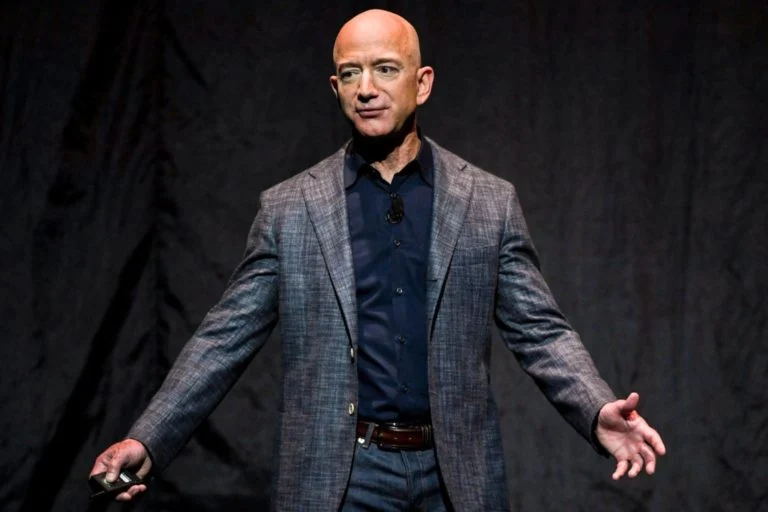
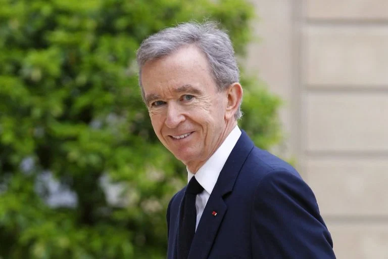
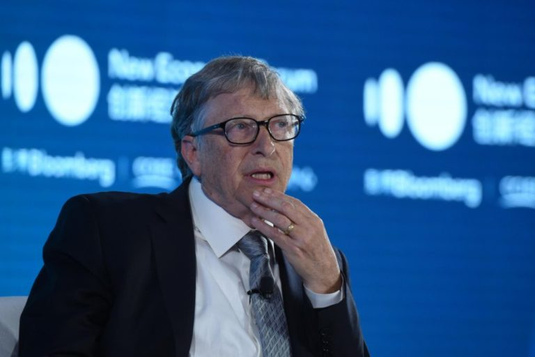
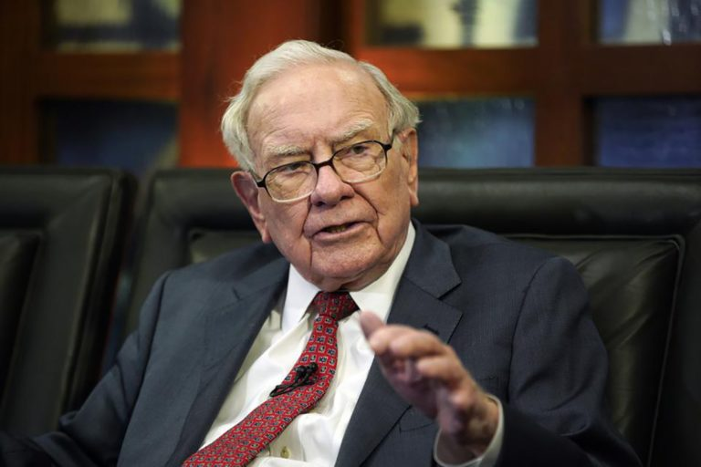
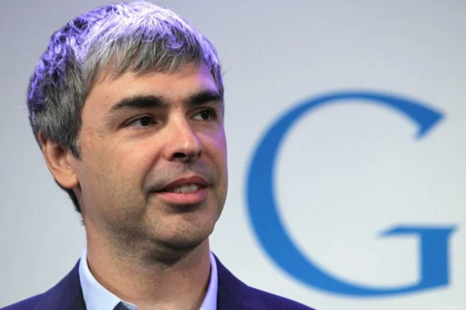
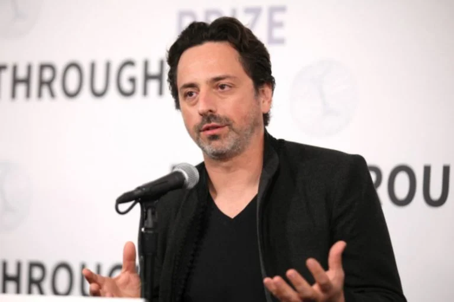
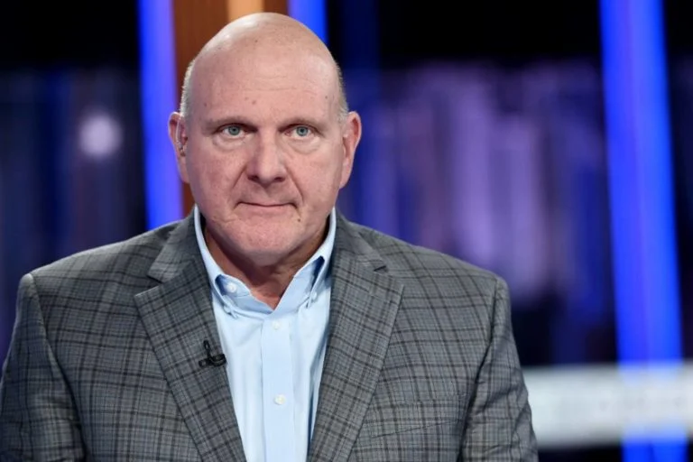

-
Elon Musk
-
Jeff Bezos

-
Bernard Arnault

-
bill Gates

-
Warren Buffett

-
Larry Page

-
Sergey Brin

-
Larry Ellison
-
Steve Ballmer
-
Mukesh Ambani
Elon Musk está trabalhando para revolucionar o transporte tanto na Terra, por meio da fabricante de carros
elétricos Tesla, quanto no espaço, por meio da produtora de foguetes SpaceX.
Fortuna: US$ 219 bilhões (R$ 1 trilhão)
Origem: EUA
Jeff Bezos fundou a gigante do comércio eletrônico Amazon em 1994 em sua garagem em Seattle. Ele deixou o
cargo de CEO para se tornar presidente executivo em julho de 2021.Fortuna: US$ 171 bilhões (R$ 803,7
bilhões)
Origem: EUA
Fonte da fortuna: Amazon
Indústria: Tecnologia
Bernard Arnault supervisiona o império LVMH de cerca de 70 marcas de moda e cosméticos, incluindo Louis
Vuitton e Sephora.Fortuna: US$ 158 bilhões (R$ 742,6 bilhões)
Origem: França
Fonte da fortuna: LVMH
Indústria: Moda e Varejo
Bill Gates transformou sua fortuna da empresa de software Microsoft em uma fortuna diversificada, incluindo
investimentos em energia de zero carbono. Fortuna: US$ 129 bilhões (R$ 606,3 bilhões)
Origem: EUA
Fonte da fortuna: Microsoft
Indústria: Tecnologia
Conhecido como o “Oráculo de Omaha”, Warren Buffett é um dos investidores mais bem-sucedidos de todos os
tempos. Fortuna: US$ 118 bilhões (R$ 554,6 bilhões)
Origem: EUA
Fonte da fortuna: Berkshire Hathaway
Indústria: Finanças e Investimentos
Larry Page deixou o cargo de CEO da Alphabet, controladora do Google, em dezembro de 2019, mas continua sendo
membro do conselho e acionista controlador. Fortuna: US$ 111 bilhões (R$ 521,7 bilhões)
Origem: EUA
Fonte da fortuna: Google
Indústria: Tecnologia
Sergey Brin deixou o cargo de presidente da Alphabet, empresa controladora do Google, em dezembro de 2019,
mas continua sendo acionista controlador e membro do conselho. Fortuna: US$ 107 bilhões (R$ 502,9 bilhões)
Origem: EUA
Fonte da fortuna: Google
Indústria: Tecnologia
Larry Ellison é presidente, diretor de tecnologia e cofundador da gigante do software Oracle, da qual possui
cerca de 35%. Fortuna: US$ 106 bilhões (R$ 498,2 bilhões)
Origem: EUA
Fonte da fortuna: softwares
Indústria: Tecnologia

Steve Ballmer é o ex-CEO da Microsoft, que liderou a empresa de 2000 a 2014. Fortuna: US$ 91,4 bilhões (R$
429,5 bilhões)
Origem: EUA
Fonte da fortuna: Microsoft
Indústria: Tecnologia

Mukesh Ambani preside e administra a Reliance Industries, que atua em petroquímica, petróleo e gás,
telecomunicações e varejo.Fortuna: US$ 90,7 bilhões (R$ 426,2 bilhões)
Origem: Índia
Fonte da fortuna: diversificada
Indústria: diversas